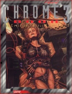

|  | Fiche technique |
| Supplément pour le jeu de rôles Cyberpunk 2020, édité par R. Talsorian Games (1994) | |
| Langue | Français |
| Thème | Catalogue Printemps-Eté |
| Qualité du background | 3 / 5 |
| Qualité des scénarii | - |
| Qualité des règles | 3 / 5 |
| Qualité des illustrations | 3 / 5 |
| Qualité de l'écriture | 3 / 5 |
Et hop, tels les petits pains, les Chromebooks se multiplient. Celui-ci, plus épais que ses prédécesseurs s'enorgueillit d'une maquette plus soignée et d'illustrations plus belles, pour la plupart. Cette fois ci, les programmes sont de retour avec tout un chapitres consacrés aux cyberdecks et à leur customisation. Les classiques rubriques sur l'équipement, la cybernétique et les véhicules sont toujours là, et on trouve en bonus quelques nouveaux FBC (cf ChromeBook 2) et ACPA (cf Maximum Metal). S'ajoute à celà des drones et des animaux modifiés pour faire bonne figure, ainsi qu'un chapitre de règles sur l'entretien de l'équipement et de la cybernétique. Malgré le soin porté au supplément, la magie du Chromebook est un peu éventée, et on a une impression de déjà-vu quasi-constante. A part quelques véhicules sympathiques et le passage sur les drones, le reste n'est pas très original, soit prolongeant le contenu des précédents Chromebooks, soit celui de Maximum Metal. Pas de quoi se jeter dessus.
{kind=link}